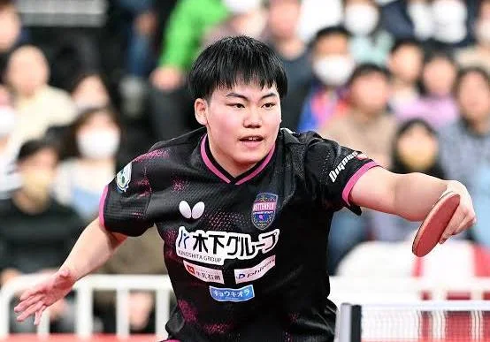

Rank #1 (7,598 points)
He was born in Japan and became the youngest World No. 1 in men's singles history in 2026 at age 19. His rise also ended a 46-year drought for Japan, making him the first Japanese man to top the world rankings since Seiji Ono in 1980.
